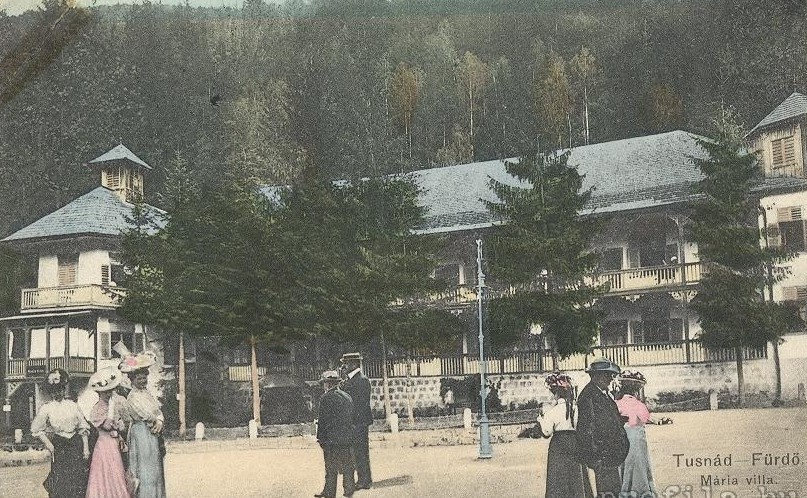
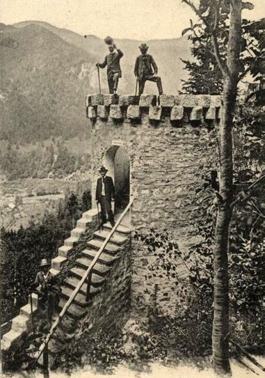
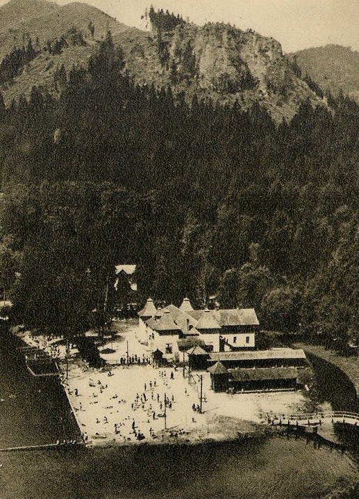
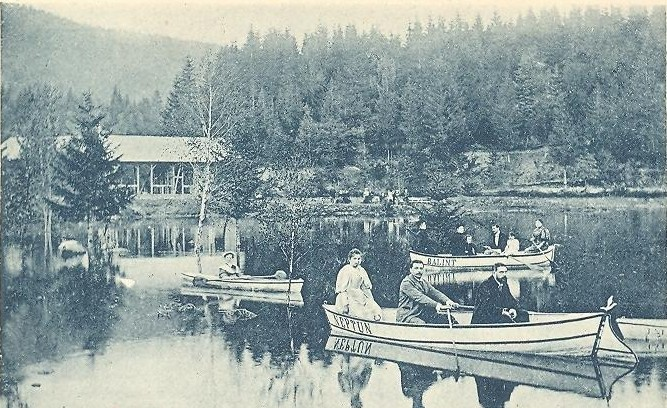
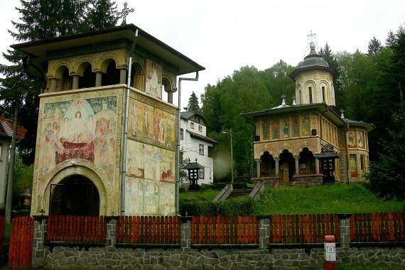
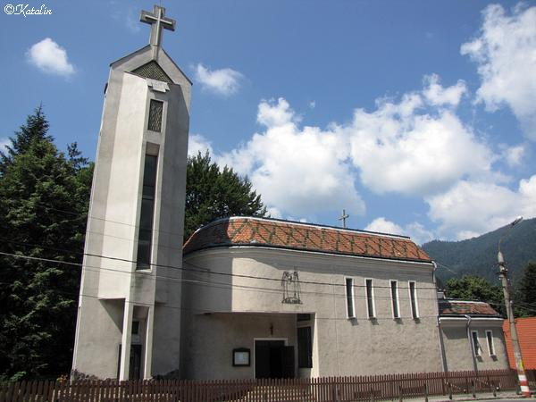
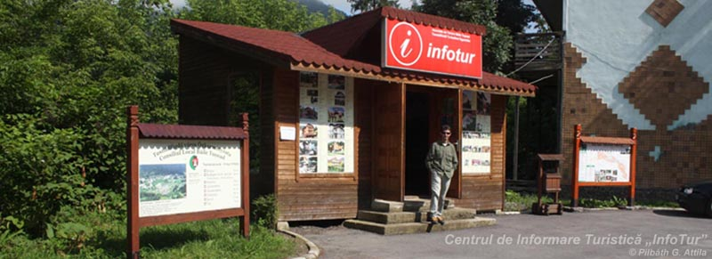
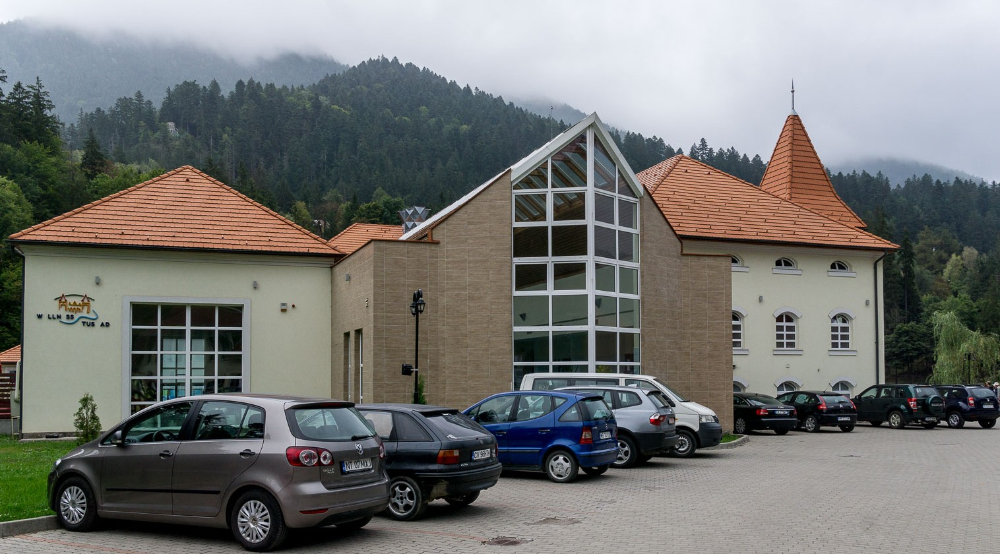
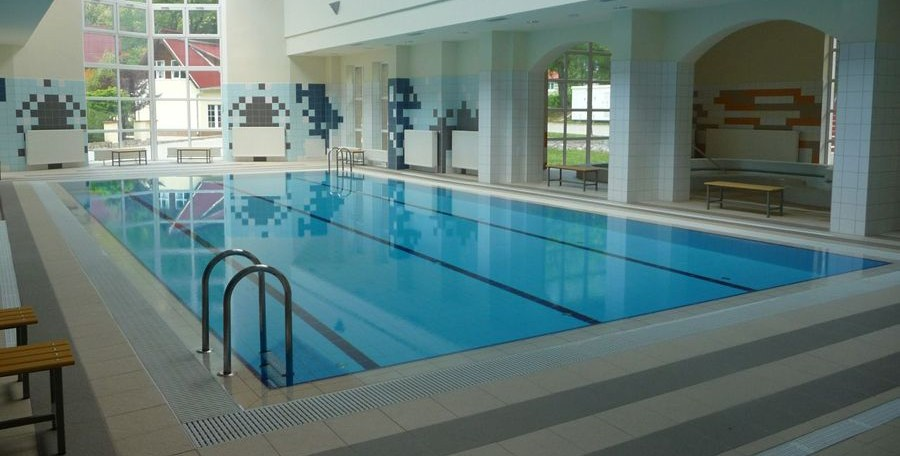

Istoria statiunii
Băile Tușnad este una dintre cele mai frumoase staţiuni montane nu numai din judeţul Harghita, ci şi din ţară, accesibilă pe DN 12 sau pe linia CF 400 Braşov – Deda și se află la 32 km sud de Miercurea-Ciuc, 37 km nord de Sfântu Gheorghe, 67 km de Braşov şi 35 km de Baraolt. Băile Tuşnad a fost declarat oraş în anul 1968, fiind şi cel mai mic din România (1641 de locuitori conform recensământului din 2011). Staţiunea, de importanţă internaţională, se află într-un loc deosebit de frumos, pe versantul vestic al masivului vulcanic Ciomad , în defileul Oltului la 656 m altitudine, în mijlocul unor păduri de brazi şi foioase, având un aer deosebit de curat, foarte bogat în ioni negativi. Oltul este cursul de apă principal al staţiunii, iar Lacul Ciucaş care este plasat în mijlocul staţiunii a fost creat în scop turistic. Masivul Ciomad este una dintre cele mai tinere formaţiuni vulcanice din Carpaţi, fenomenele vulcanice în zona Tuşnadului au avut un rol important în formarea şi dezvoltarea staţiunii, iar cele postvulcanice fiind foarte active, reprezintă un factor important în viaţa staţiunii Băile Tuşnad. Prezenţa emanaţiilor de CO2 şi a apelor minerale au permis practicarea tratamentelor terapeutice şi au creat condiţiile necesare pentru ca oraşul să devină o staţiune balneoclimaterică importantă.
Etape importante din viaţa staţiunii
1842: legenda pretinde că primul care ar fi atras atenţia asupra efectelor curative ale apelor de aici ar fi fost un cioban. Zona atunci
era denumită Câmpul Vorbirii
iar vestea izvoarelor trecea de hotarele comunei Tuşnad;
1845: Élthes Lajos iniţiază înfiinţarea unei societăţi pe acţiuni cu şase membri din satele Tuşnad, Vrabia, Cozmeni şi Lăzăreşti şi
închiriează zona pe timp de 99 ani.
Cu timpul numărul membrilor cooperaţiei creşte la 42 şi încep construirea primelor 40 de vile. În scurt timp a fost ridicată Casa
Episcopului
(donaţia episcopului de Alba Iulia, Kovács Miklós, originar din Tuşnad) şi Casa Oaspeţilor;
1848-49: evenimentele revoluţionare opresc pentru un timp dezvoltarea staţiunii. Locuitorii satului Tuşnad au dat foc stabilimentelor
existente pentru că autorităţile
anulează dreptul de folosire gratuită a băilor minerale;
1852: împăratul Ferenc József a admirat priveliştea de pe Piatra Şoimilor şi a sugerat reamenajarea localităţii. Magnaţii din judeţul
Trei-Scaune au înfiinţat o societate
pe acţiuni a căror preşedinte era baronul Szentkereszthy Zsigmond şi patronul era contele Mikes Benedek. Pe stânca Alvég (dealul Ludmilla)
s-au construit o serie de vile de
tip elveţian (Szentkereszty, Vajna, Demeter, Konopaczek, Tompa, Szőcs, Trei Husari), zona fiind cunoscută şi până azi ca “Mica Elveţie”;

1864: staţiunea a trecut în administrarea lui Nagy Dániel din Târgu Secuiesc;
1866: contele Mikes Kelemen a trimis apă din opt izvoare la Zürich la chimistul Dr. Dietrich H. Gustav pentru analize. Din analize a
rezultat că apa din izvorul principal
(Siloe, actualul izvorul Stănescu) se aseamănă mult cu apa din Borsec care era deja cunoscut la acel moment. Începe înbutelierea apei
izvorului Siloe dar izvorul îşi pierde
treptat din debit, ceea ce determină încetarea îmbutelierii la începutul anului 1900. Izvorul nr. 3 primeşte denumirea de „Mikes”. La acel
moment erau 892 de turişti în
staţiune din care 597 din străinătate;
1868: se construieşte aleea acoperită între vilele elveţiene (între cofetăria Veveriţa şi restaurantul Laleaua de azi);
1870: se construieşte drumul naţional între Miercurea-Ciuc şi Sfântu Gheorghe;
1872: se ridică pavilionul Ludmilla, care este denumit după soţia unui acţionar majoritar, contele Kőröspataki Kálnoky Félix;
1875: un eveniment cu implicaţii deosebite privind dezvoltarea staţiunii a fost prezentarea istoricului şi valorilor balneo-climaterice
ale staţiunii de către specialistul
balneolog dr. Lengyel Gyula, la conferinţa naţională a medicilor şi naturaliştilor maghiari;
1883: mulţumită contelui Apor Károly a fost construit în partea de jos a vârfului Surduc, Turnul Apor, un punct panoramic şi de odihnă,
care nu a fost folosit niciodată ca obiectiv strategic;

1890: este amenajat primul edificiu balnear Ştefania, cu instalaţii de hidroterapie şi dotat cu 4 piscine acoperite, 4 băi reci, 14 vane de porţelan, acesta funcţionând până în anul 1975;
1891: comerciantul braşovean Tache Stănescu a început lucrări de interes comunitar, s-au amenajat parcuri, s-au captat izvoare şi au fost
construite alei în vederea
servirii optime a turiştilor. În prezent izvorul nr. 1 poartă numele comerciantului. Staţiunea avea 103 rezidenţi;
1893: au început lucrările de captare ale izvorului mezotermal “Rezső” şi de construire a băilor mezotermale “Rezső” din izvoarele Ilona,
fiind numit ştrandul mezotermal
, care in momentul actual nu mai functioneaza.
1897: a fost finalizată calea ferată Sfântu Gheorghe – Miercurea-Ciuc, care a rezultat creşterea numărului de turişti. În acelaşi an s-a
construit primul salon de cură
balneară cu numele “Kurszalon”, care avea o alee de 70 m, sală de dans şi scenă proprie, dar în anul 1913 a fost devastată de un incendiu;
1900: lacul artificial Ciucaş a fost amenajat între 1882-1893, amenajare continuată ulterior în anii 1920 cu un ştrand în aer liber (Baia
Săracilor) iar pe lac se putea
plimba cu barca. În 1912 pe malul lacului Ciucaş s-a construit un Complex de agrement ce cuprindea restaurant, teatru, cinema, sală de
festivităţi şi cazinou.
În albia lacului sunt prezente izvoare de apă minerală şi emanaţii de dioxid de carbon. La începutul secolului al XX-lea în 33 de vile,
700 de locuri de cazare aşteptau turişti
din întreaga Europă, numărul cărora depăşea frecvent 2000 de plătitori pe an;

1902: s-a organizat Congresul Secuiesc cu 500 de participanţi la care a fost discutat situaţia economică dificilă a zonei.
1913: folosirea denumirii „Tuşnad Băi” este legalizată pentru staţiune;
1928: prin donaţii s-au construit o capelă catolică cu 60 de locuri;
1932: după datele din foaia informativă „România balneară şi turistică”, staţiunea avea o capacitate de 800 de locuri în 40 de
vile;
1933-35: un domn, pe numele Experszid, a construit vila Etel şi tot el a pus în funcţie prima staţie electrică care a asigurat
electricitate staţiunii între orele 19-24 în fiecare seară;
1934: staţiunea Băile Tuşnad a dobândit statut de localitate de sine stătătoare din punct de vedere administrativ, separându-se de comuna
Tuşnad;
1939: Şerban Mihai a început construirea bisericii ortodoxe dar munca a fost întreruptă şi reluată în anul 1955. Biserica a fost
finalizată abia în anul 1977, iar icoanele au
fost pictate între 1971-1977 de câtre Eugen Profeta din Bucureşti;

1941: Băile Tuşnad are deja 724 de locuitori iar între 1941 – 1943 staţiunea devine din nou foarte populară;
1948: staţiunea trece printr-o dezvoltare rapidă. Regimul comunist a adus cu sine naţionalizarea vilelor şi restaurantelor, alimentarea cu
energie electrică şi
apă potabilă a staţiunii. S-a înfiinţat atunci prima Întreprindere Balneară, transformată în 1973 în Întreprindere Balneară
Judeţeană;
1956: populaţia localităţii era de 956 locuitori, iar peste 10 ani era de 1096;
1960: au modernizat drumul naţional asigurând un acces plăcut spre zona staţiunii pentru turişti cu automobile;
1968: perioadă importantă în istoria staţiunii, Băile Tuşnad a fost declarată oraş;
1971: s-a înfiinţat Oficiul Judeţean de Turism – OJT a cărui centru era Băile Tuşnad. În oraş a început că crească numărul construcţiilor
prin investiţii de stat.
A devenit un agrement important a sindicatelor naţionale de comerţ. Vila Trei Husari a fost transformată în bibliotecă şi cămin cultural
iar pe ambele maluri ale
Oltului se amenajează tabere de camping. Se modernizează vilele, apar parcările şi în anii ’70-’80 se construiesc hotelurile Ciucas,
Tuşnad şi Olt. S-au construit
magazine şi unităţi de alimentaţie publică, iar hotelul Tuşnad este legat cu un coridor cu Baza de tratamente balneare, care a fost dotat
cu cel mai modern echipament
la acel timp, medici de specialitate, asistente medicale şi maseuri vindecau pacienţii;
1977: în urma unui foraj de prospecţiuni geologice lângă Lacul Ciucaş, la adâncimea de 1100 m, s-a găsit apă termală cu temperatura de
63°C, fapt care a generat
construirea unui ştrand termal dar din păcate puţul s-a înfundat la sfârşitul anilor 1980. În anii 70’ se construieşte o şcoală şi o
farmacie nouă;
1980: fostul restaurant-cafenea “Eldorado” a fost renovată şi dată în folosinţă ca restaurant cu numele de “Laleaua” şi se mai construiesc
Complexul Ana şi
restaurantul Moara la Făgădău. Pentru îmbunătăţirea confortului şi a deservirii au fost investiţi milioane de lei. Toate vilele au fost
renovate, fiind
dotate în întregime cu mobilier nou. Mai bine de 80 la sută din vile au fost echipate cu instalaţii de încălzire centrală şi apă caldă. În
timpul sezonului
de vară au fost cazaţi zilnic 2000 de oameni;
1982-83: a fost construită biserica modernă romano-catolică în locul capelei vechi, construite în anul 1929;
 
1987: date memoralistice spun că la acel moment staţiunea găzduia zilnic 4000 de turişti. Totalul turiştilor care au vizitat
staţiunea anual în această perioadă
era de peste 60.000, peste 300.000 nopţi de cazare pe an.
1990: după revoluţie se construieşte turnul de clopot lângă bisericia catolică. S-a desfiinţat Oficiul Judeţean de Turism şi s-au format
mai multe firme cu capital
privat. La sfârşitul anilor ’90 se începe din nou reamenajarea oraşului prin renovarea vilelor vechi , construirea unor pensiuni noi.
Cu ocazia Mileniului se construieşte un parc de sculpturi vizavi de biserica catolică.
Se ridică o piaţă modernă, se renovează şcoala generală Jókai Mór şi se modernizează mai multe hoteluri.
Vila Anna (Vila Zakariás) este cumpărată de Fundaţia Sfântul Francisc din Deva.
În ultimi ani oraşul dă loc unor conferinţe şi reuniuni internaţionale ca Universitatea de Vară ‘Bálványos’;
2005 – 2011: a fost înfiinţată Asociaţia de Turism Băile Tuşnad cu 18 membri fondatori a căror număr în timp de 5 ani a crescut la 30.
Scopul iniţial al asociaţiei
a fost dezvoltarea turismului în oraş.
În perioada următoare oraşul a trecut prin mai multe schimbări. A fost construită o sală de sport modernă, locuinţe ANL cu 32 de
apartamente şi s-au demarat lucrările
pentru construirea locuinţelor sociale. S-a amenajat o pârtie de schi care este dotată cu: instalaţie de iluminat pentru schi nocturn,
schi pass cu cartele magnetice,
centru de închiriere schiuri, schibar, instalaţie cu tunuri de zăpadă artificială.
Mai multe clădiri au fost renovate şi modernizate, printre care: Complexul Ana, Complexul Ciucaş cu baza de tratament, grădiniţa, Gara
CFR.
Reţeaua de canalizare a oraşului este în curs de amenajare, de asemenea a început şi construirea staţiei de decantare şi a renovării
reţelei de alimentare cu apă potabilă.
În centrul oraşului s-a construit un birou de informare turistică (InfoTur), coordonat de Asociaţia de Turism Băile Tuşnad.

Bastionul Apor a fost restaurat şi, de curând, iluminat ecologic (cu un panou solar fotovoltaic).

În ultimii ani s-au organizat diferite evenimente (concurs de atelaj canin; Zilele Gastronomiei; concurs cu parapanta – Tuşnad PG;
semimaraton şi ştafetă;
Competiţia Internaţională X-terra; Mountain Bike Maraton – MTB Tuşnad), care atrag numeroşi turişti atât din ţară cât şi din
străinătate.
Deloc de neglijat este şi oferta de ecoturism (drumeţii pe traseele turistice marcate; rafting şi kayaking pe râul Olt; zborul cu
parapanta; mountainbike,
observare de urşi în natură; schi de tură; plimbări cu sania trasă de cai; schi şi snowboard etc).
S-au demarat lucrările la amenajarea şi modernizarea centrului oraşului (Drumul Apelor Minerale), şi nu în ultimul rând, menţionăm şi
faptul că,
s-au finalizat lucrările la Centrul Wellness de pe malul lacului Ciucaş. Se doreşte ca acesta să fie un punct forte pentru turismul
localităţii,
astfel încât staţiunea să-şi redobândească numele de „Perla Transilvaniei” sau de „Mica Elveţie” cum a mai fost denumită.
 